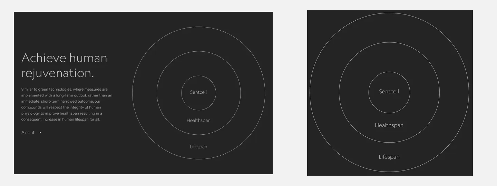

Sacchi Noah · UI/UX Design · 2026
Sentcell. Dare forma a una scienza complessa.
Come dare accesso a una scienza complessa? La mia
reinterpretazione
didattica di Sentcell parte dai livelli
di lettura.

studente
noah sacchi
corsi
ITS Web Design e Strategie Digitali
Moduli
UI/UX Design
scuola e anno
ITS ACCADEMY 2 anno
dal progetto case study
anche questa pagina e un
progetto
Per raccontare Sentcell ho progettato una seconda
interfaccia: questo case study. Ho studiato Primer Brand e
combinato i suoi componenti per dare una forma coerente al <>racconto.